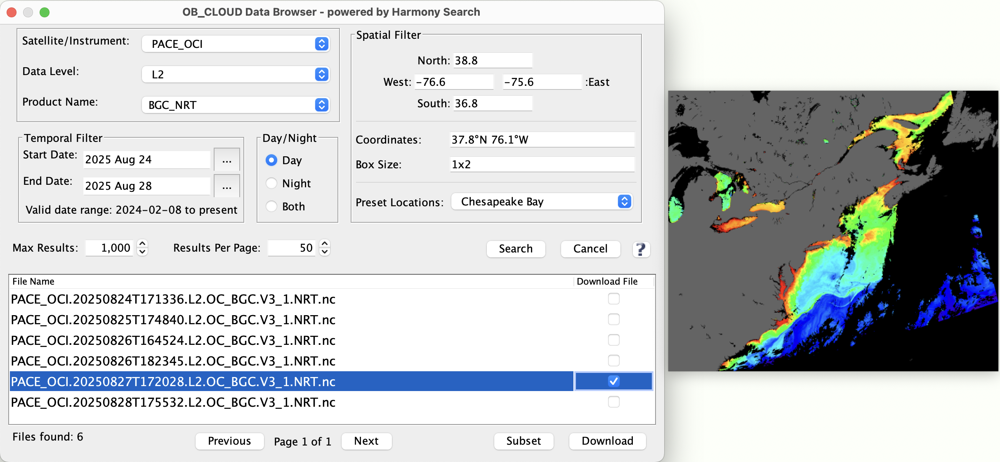
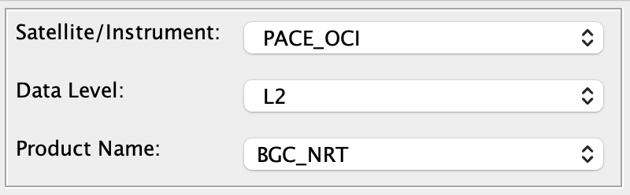
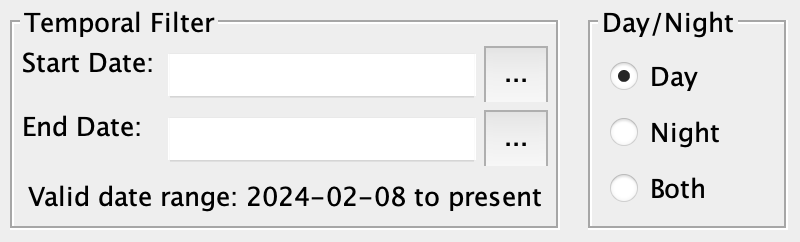
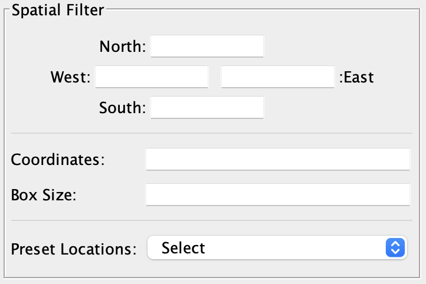
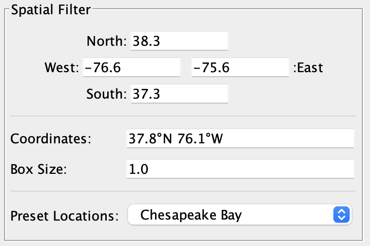
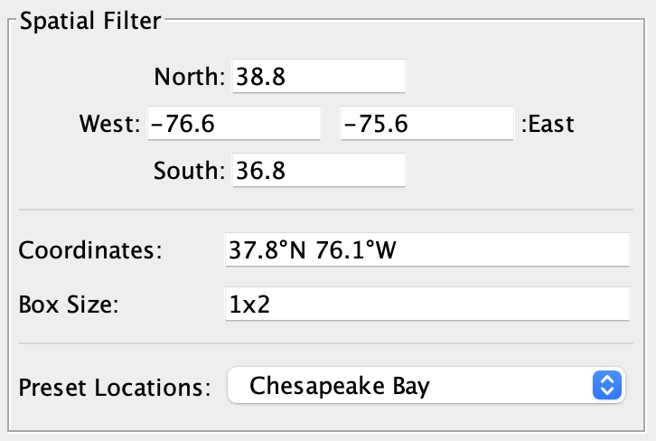

| OB_CLOUD Data Browser | |
The OB_CLOUD Data Browser is a tool for browsing the Ocean Biology OB.DAAC satellite data which resides in the NASA Earthdata cloud. This tool interfaces with the Harmony Search Service and leverages CMR (Common Metadata Repository) for granule-level metadata retrieval.

Location:
• Menu > Earthdata-Cloud > OB_CLOUD Data Browser
• (Preferences): Menu > SeaDAS > Settings > Seadas Toolbox > Earthdata Cloud
Features:
• Mission-aware metadata filtering using satellite/instrument, data level, and product names.
• Mission-aware metadata filtering using satellite/instrument, data level, and product names.
• Integrated spatial and temporal filters, with automatic date validation based on mission-specific coverage.
• Day/Night granule selection, supporting all CMR day_night_flag values.
• Granule preview support, with hover-based thumbnail loading from browse_images, and full-resolution image viewing.
• Granule pagination and result management, decoupling total fetch limit from per-page display.
• Secure file downloads with Earthdata login support and progress monitoring.
Product-Mission Criteria
The search for satellite data can be restricted to a specific satellite mission, data level and product.

• Satellite/Instrument
This is the satellite mission (also referred to as a specific instrument or sensor which is mounted on a specific orbiting satellite platform).
Note that for certain sensor designs, (for instance VIIRS, MODIS, OLI, OLCI) there can be multiple of these which are operational or have been operational. This is usually delineated and contained in short form in the satellite mission name. So:
- 'MODISA'
Refers to the 'MODIS' sensor that is mounted on the 'Aqua' platform.
- 'MODIST'
Refers to the 'MODIS' sensor that is mounted on the 'Terra' platform.
- 'PACE_OCI'
Refers to the 'OCI' sensor that is mounted on the 'PACE' platform.
- etc.
Note: you can only select one mission ('Satellite/Instrument') per search. This is because the data levels a especially the products can be specific to each mission, and those selector are dynamically configured based on the mission you choose.
• Data Level
This is the science processing level of the data.
• Product
This is the specific product of the data.
Temporal Filter
The search for satellite data can be restricted based on a time period. Included within this are options to restrict based on whether the data was imaged in the daytime or nighttime.

• Start Date
This is the start date of the data. If this is left blank then start of the mission is assumed.
• Stop Date
This is the stop date of the data. If this is left blank then start of the mission is assumed.
Temporal Filter: Day/Night
These are the options to restrict based on whether the data was imaged in the daytime or nighttime.
• Day
Search only retrieve data which was imaged in the daytime.
• Night
Search only retrieve data which was imaged in the nighttime.
• Both
Search is not restricted to daytime or nighttime data.
Spatial Filter
The search for satellite data can be restricted to a user specific geographic region of interest. This is done through parameters known geographic 'bounding_box', which is defined by the fields: North, South, West and East. The search will only return satellite data files which match in part or in full the user requested bounding_box. Keep in mind that satellite data (such as unprojected level-2 data) is oriented to the actual observation of the earth made by the satellite, and is not precisely represented by a North, South, West, East bounding box. So this can result in some extra files returned by the search which do not actually have data in the user requested bounding box.

• North
Northernmost latitude relative to requested region
(used in field 'bounding_box' of API)
Default=90.0
• South
Southernmost latitude relative to requested region
(used in field 'bounding_box' of API)
Default=90.0
• West
Westernmost latitude relative to requested region
(used in field 'bounding_box' of API)
Default=-180.0
• East
Easternmost latitude relative to requested region
(used in field 'bounding_box' of API)
Default=180.0
Spatial Filter: Formatting
The internal format which is ultimately used for the spatial fields is the decimal format. However, the browser tool will accept and convert most any format.
The following table illustrates the full list of optional formats (shown in example for a sample point in the Chesapeake Bay).
| Format | Lat | Lon |
|---|---|---|
| Decimal_Degrees (Numeric) | 37.85 | -76.15 |
| Decimal_Degrees (Compass) | 37.8°N | 76.15°W |
| Degrees (Numeric) | 37° | -76° |
| Degrees (Compass) | 37°N | 76°W |
| Degrees_Minutes (Numeric) | 37°48′ | -76°6′ |
| Degrees_Minutes (Compass) | 37°48′N | 76°6′W |
| Degrees_Minutes_Seconds (Numeric) | 37°48′00″ | -76°6′00″ |
| Degrees_Minutes_Seconds (Compass) | 37°48′00″N | 76°6′00″W |
Note: for the format of minutes and seconds: the single quote and double quote characters can optionally be used instead of the alphanumeric prime characters.
Spatial Filter: Accessory Tools
There are several accessory fields which can aid in populating the North, South, West and East fields. These fields themselves are not actually used in the search.
• Coordinates
This is a single coordinate point (latitude longitude) to serve as the center of the scene. The 'Box Size' is used in combination with the 'Coordinates' to populate the North, South, West, East fields.
• Box Size
This is size of the region (in degrees). The 'Box Size' is used in combination with the 'Coordinates' to populate the North, South, West, East fields.
The options are:
- Box Size = [Number]
This value defines the width and height (in degrees) of the region which is centered on the value in the 'Coordinates' field.
- Box Size = [Dimension] (lon x lat)
This two-dimension value (format lon x lat) defines the width and height (in degrees) of the region which is centered on the value in the 'Coordinates' field.
• Preset Locations
These are pre-defined stored locations or regions (see images 2 and 3). Selecting this will set the "Coordinates" field, which in turn will set the North, South, West, East fields. The non-editable configuration file which contains these is ~/.seadas/auxdata/regions/regions.txt
|
Example 1 In this example the user sets the 'Box Size' and the 'Coordinates'. The 'North', 'South', 'West' and 'East' fields then get auto-filled.
 Here the 'Box Size' is set to a number ('1') and the 'Coordinates' are also set. Then the 'North', 'South', 'West' and 'East' fields get auto-filled. A 'Box Size' of '1' means that the box will span west-east by 1 degree and span north-south by 1 degree centered about the 'Coordinates'.
Hence: |
|
Example 2 In this example the user sets the 'Box Size' and the 'Coordinates'. The 'North', 'South', 'West' and 'East' fields then get auto-filled.
 Here the 'Box Size' is set to a number ('1x2') and the 'Coordinates' are also set. Then the 'North', 'South', 'West' and 'East' fields get auto-filled. A 'Box Size' of '1x2' means that the box will span west-east by 1 degree and span north-south by 2 degrees centered about the 'Coordinates'.
Hence: |
Spatial Filter: Custom User Locations
Text TBD
• User Locations
These are user-defined locations or regions (see figure 4). Selecting this will set the "Coordinates" field,
which in turn will set the North, South, West, East fields.
*The 'User Region' field is not available by default,
but can easily be added by going to the Preferences page
(Menu > SeaDAS > Settings > Seadas Toolbox > Earthdata Cloud) and checking "User Region Selector".
The editable file which contains these is ~/.seadas/auxdata/regions/user_regions.txt.
|
Example 3 Here's a sample of the formatting in the user configuration file: #---------------------------------------------------------------------- # Sample entries for a point location # These entries will populate the 'Coordinates' field. Then the # 'Coordinates' field in combination with the 'Box Size' field will # auto-populate the 'North', 'South', 'West', and 'East' fields. # Format: (coordinates can be space and/or comma delimited) # Name = Lat Lon #---------------------------------------------------------------------- My Sample Location = 37°48′00″N, 76°6′00″W My Sample Location (Decimal) = 37.8°N, 76.1°W #---------------------------------------------------------------------- # Sample entries for a bounded region # These entries will directly populate the 'North', 'South', # 'West', and 'East' fields. # Format: (coordinates can be space and/or comma delimited) # Name = North South West East #---------------------------------------------------------------------- My Sample Region = 39°36′00″N, 35°54′00″N, 77°30′00″E, 74°18′00″E My Sample Region (Decimal) = 39.6°N, 35.9°N, 77.5°E, 74.3°E |